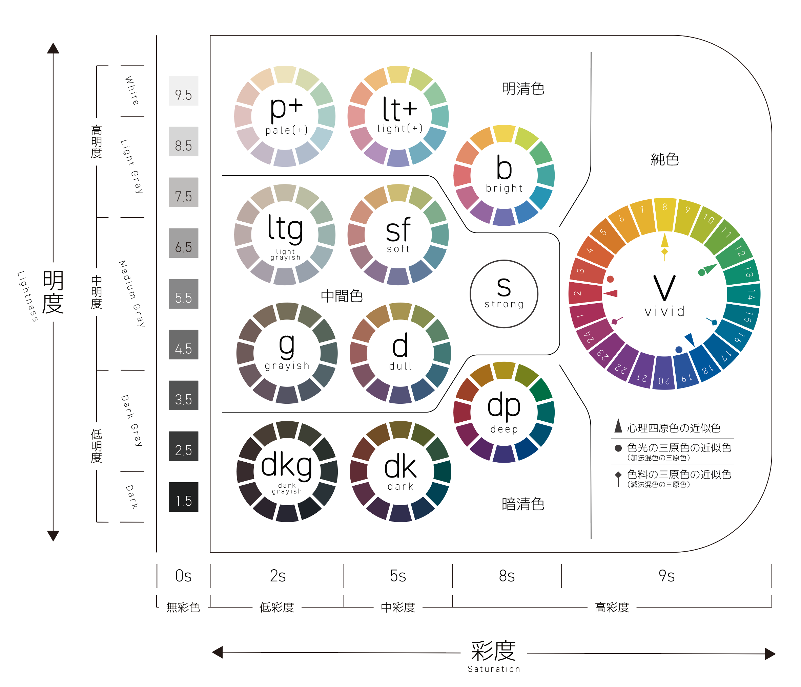

最終更新日：2025-5-19
ヘルプセンター
PCCSとは？
- 一般財団法人日本色彩研究所が開発した表色系。
- 「Practical Color Coordinate System（日本色研配色体系）」の略。
- 色を「彩度」「明度」を「トーン」という概念で表したもの。
- 参考
- 本サイトのPCCSは、「色彩検定３級」のテキストと「新配色カード199a」を参考に制作されたため、 「sトーン(strong)」はありません。また、「ltトーン(light)」「pトーン(pale)」は、 代表色よりも彩度が高い色であることを示す「＋」の記号が付いています。
使い方
- 中心にあるPCCSをタップまたはクリックし、配色の確認ができます。その際に選択したカラーの上に「選択ボックス」が、PCCSの外周に「配色ダイヤル」が表示されます。
- 選択ボックスをクリックした状態で動かすと、色の変更ができます。外周の配色ダイヤルを回すと、一度に全ての色を変更できます。
- 色は最大4つまで追加できます。
- 配色の順番を変更または削除が可能です。
- PCCSの「拡大縮小・移動」が可能です。（PCの場合はマウススクロール、スマホ等は2本指でズーム）
- 右上のリセットマークを押すことで、PCCSの大きさ・位置のリセットができます。
- 左上の三叉マークを押すことで、「配色パターン」の一覧を見ることができます。
- 一覧のボタンを押すことでも配色の確認が可能です。
変更方法
配色カードをタップまたはクリックすると選択されます。その状態で他のカードを選択すると、場所の移動ができます。削除する際は画面中央のゴミ箱マークを押すと削除が可能です。
- 『配色ダイヤル」等の名称は、当サイトの管理者が命名したものです。正式名称ではございません。
配色のヒント
- 当サイトでは円形のPCCS（日本色研配色体系）を使用しておりますが、PCCSにはその他にもトーン別に分類された表形式のバリエーションが存在します。
- 画面左側の「D」マークを押すと、PCCSのトーン表が表示されます。
- 例：
詳細を表示
「一つのトーン」のみで配色する「同一トーン配色」


「隣り合うトーン」で配色する「類似トーン配色」


「対角位置のトーン」で配色する「対照トーン配色」
「順番」に並べる「グラデーション配色」
その他配色例
Q&A
「彩度」「明度」「色相」「トーン」とは？
「彩度」とは、その色の「鮮やかさ」のこと。
彩度の数値が高いほど鮮やかになり、低いほど黒や白に近い色になる。
PCCSでは、数値と彩度(Saturation)の頭文字である「s」を使って表される。無彩色(黒、白等)の0sから、純色(最も彩度が高い色)の10sの10段階で表されるが、色票では10sが表現できないため9sが事実上の純色として扱われている。
「明度」とは、その色の「明るさ」のこと。
数値が高いほど明るい色で、白に近い色になり、数値が低いほど暗く、黒に違い色になる。
PCCSでは、Bk(Black)の1.5〜W(white)の9.5の間で0.5刻みの17段階で表される。
「色相」とは、赤、オレンジ、黄、緑、青、紫といった色の様相の相違である。「色相環」とも呼ばれる。色相環を表現するもののことを「表色系」と言い、その一種がPCCSである。
PCCS以外にも「マンセル表色系」「オストワルト表色系」などが存在する。
PCCSにおいては、１〜２４の色相で表され、後述する「トーン」と合わせて「v1」「p13」「lt23」などと表し、これを２属性と言う。３属性では「色相-明度-彩度」の順番で「2:R-8.5-2s」のように表す。
上記の3つを合わせて「色の三属性」と言う。
「トーン」とは、PCCSにのみある概念。
無彩色は５色、有彩色は１２色で表される。
本サイトの色彩カードに記述している「v●」「dp●」「lt●」などのこと。
お問い合わせ
アップデート記録
- 0000/00/00
- 内容